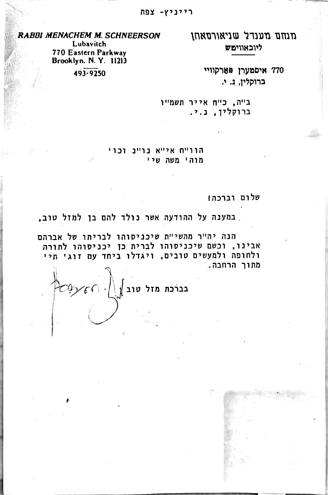

התחומים
מידע, כלים וקישורים
מידע הלכתי ומנהגי חב״דגלול ↓
לקריאה והכנה · מסוכם ממנהגי חב״ד ומחוברות קהילה והלכה · אין זה פסק הלכה
אם הרופא או המוהל מורים לדחות את הברית - ראו להלן מנהגים והלכות לברית דחויה
א. דחיית ברית (צהבת, חולי או חולשה)
- אפילו על חשש קל, על ספק חשש קל, ואפילו על ספק ספיקא שהתינוק לא התחזק מספיק, צהוב וכדומה – יש לדחות את הברית, ואפילו בשבוע.
- אם יש ספק האם לדחות – יש לדחות על פי הוראת רב. אין להקל בזה.
- ההחלטה נתונה ביד רב מורה הוראה הבקיא – לא ביד המוהל או ההורים בלבד.
- ברית שנעשתה מאוחר – הרי זה כאילו נימול בזמנו (מתקנת למפרע).
- ברית שלא ביום השמיני אינה דוחה שבת או יום טוב.
ב. יום השמיני ובין השמשות
- נולד לפני השקיעה – אותו יום נספר כיום הראשון; הברית ביום השמיני מאותו תאריך.
- נולד אחרי צאת הכוכבים – היום העברי הוא למחרת.
- נולד בין השמשות (ספק) – נוהגים להחמיר ולמנות מהיום המאוחר. ספק אינו דוחה שבת/יו״ט.
- מומלץ להשתמש במחשבון זמן הברית, ולאמת מול זמני חב״ד.
ג. בין הלידה לברית
- בהולדת בן מברכים «הטוב והמטיב». גם האשה מברכת. אם לא בירך בשעת הבשורה – יכול לברך כל זמן שהשמחה עדיין בליבו.
- לאבי הבן זכות קדימה לעלייה לתורה בשבת שלפני הברית (אינו דוחה: חתן לפני חתונה, בר מצווה, בעל יולדת בשבת הראשונה, יארצייט).
- כשהתינוק מגיע מבית הרפואה – נוהגים לאסוף לידו תינוקות של בית רבן שיאמרו פסוקים ומאמרי חז״ל לפני השינה.
- בליל שבת שאחר הלידה – נוהגים לעשות התוועדות «שלום זכר» (חומוס/קטניות, מזונות, פירות).
- נהגו ישראל להניח כיפה על ראש התינוק מאז לידתו.
- הקובעים את השם הם ההורים, בהסכמת שניהם. מנהג החסידים לקרוא על שם הרביים והרבניות – ואין לצרף שם נוסף לשמות הרביים.
ד. ליל שימורים (ואך-נאכט)
- נוהגים להיות ערים כל הלילה שלפני הברית, ליד התינוק, ולעסוק בתורה.
- קוראים פסוקים שונים וקטעי זוהר (יש גמ״ח לספרים אלה).
- יש מחלוקת האם חובה להיות ערים בכל הלילה כשחל בשבת או בליל שימורים (פסח) – אבל ברור שיש לומר את הפסוקים וקטעי הזוהר.
- בברית דחויה – כדאי לברר עם רב חב״די אם יש דגשים מיוחדים.
ה. הכנה לברית – מנהגים מעשיים
- אין מזמינים לברית אלא מודיעים על מקום ושעת הברית (לפי המנהג).
- יש להאכיל את התינוק עד כשעה לפני הברית.
- ציוד מומלץ: 2 חיתולי בד, טיטולים, מגבונים, יין + כוס, 2 טליתות, סט בגדים להחלפה. בבית מרקחת: משחה ונובימול – לפי הוראות המוהל.
- עדיף להלביש בבגד שני חלקים (חולצה ומכנסיים). על פי הלכה – בגד נאה.
- ההידור – לקחת מוהל מומחה. נהוג לשלם למוהל על הברית.
ו. כיבודים במנהג חב״ד
- קוואטער / קוואטערין – מביאים את התינוק לברית (לרוב זוג).
- חייקה – מחזיק לפני כיסא אליהו.
- כיסא אליהו · סנדק (דמיושב) – מחזיק בשעת המילה. נחשב כמקטיר קטורת; סגולה לאריכות ימים.
- עמידה לברכות (דמעומד) – מחזיק בעת הברכות והשם.
- מברך על הכוס וקורא את השם – לרוב אבי הבן. בעת הברית נהוג לעמוד.
- הוראת הרבי: מי שרוצה לכבד את הרבי בסנדקאות – מניחים תמונת הרבי על ברכי הסנדק (לא למראשות התינוק).
- כשהרבי (הריי״ץ והרבי) כובדו בסנדקאות – לא הסתכלו על הברית אלא הפנו ראשם לצד.
ז. תחנון ביום הברית
- אין אומרים תחנון במקום הברית; המוהל, הסנדק ואבי הבן – עד לאחר הברית.
- אם מנחה בזמן הסעודה – אין תחנון. אחרי הסעודה – הציבור כרגיל; בעלי הברית אינם אומרים תחנון כל היום.
ח. סעודת הברית והתוועדות
- סעודה עם בשר (לפי המנהג). נוהגים לחזור מאמר חסידות. ניתן לנגן ניגון ד׳ בבות.
- «הרחמן הוא יברך את בעלי הברית» – יש דעות שונות היכן לאומרו. אחרי כל הרחמן – הציבור עונה אמן.
- נוהגים לתת דמי קדימה למוסד תורני (תמכי תמימים) – «כשם שנכנס לברית כן יכנס לתורה».
ט. ביום הברית – תזכורת
- אישור רפואי סופי · הכנת התינוק לפי המוהל · כיסא אליהו ויין · חלוקת כיבודים · הנחיות אחרי ומעקב.
מקורות: חוברת מידע לידה·ברית·פדיון (ועד אברכי אנ״ש צפת), שבח הברית (הרב הורוויץ), שמירת השמחות, מנהגי חב״ד והוראות הרבי.
אין זה פסק הלכה. בכל ספק – מוהל, רופא ורב מורה הוראה.
מחשבון זמן בריתלחץ
חישוב יום השמיני - עזר בלבד. לאמת מול זמני חב״ד, במיוחד בלידה סביב שקיעה או בין השמשות.
שיטת צאת הכוכבים האוטומטית טרם אושרה בידי רב או מוהל. סביב שקיעה אין לקבוע מועד על סמך המחשבון בלבד.
יש לאמת זמנים למיקום הלידה; הקישור הבא אינו בוחר עיר אוטומטית: זמנים בחב״דמאמר הרבי לברית (תשט״ז), בנוסח שהוגה על ידי הרבי בקונטרס י״ח ניסן תנש״א. נפתח באתר חב״ד ודורש חיבור לאינטרנט.
מחשבון הוצאות בריתלחץ
אודות · מקורות · פרטיותלחץ
מה זה? צ׳קליסט ומחשבונים להכנות לברית מילה במנהג חב״ד - כולל מחשבון יום השמיני ומחשבון הוצאות.
מקורות: מנהגי חב״ד; חוברת מידע לידה·ברית·פדיון (ועד אברכי אנ״ש צפת); שבח הברית (הרב שמואל הלוי הורוויץ); שמירת השמחות. הסיכום נעשה לצורכי לימוד והכנה בלבד.
פרטיות: המחשבונים והצ׳קליסט פועלים בדפדפן שלך בלבד. הנתונים (סימונים, ערכי מחשבון, מספר וואטסאפ ובחירת יעד תרומה מאושר) נשמרים מקומית במכשיר (localStorage) ואינם נשלחים אלינו. לחישוב זמנים נשלחים קואורדינטות היישוב והתאריך ל-Hebcal. יעד התרומה נבחר רק מתוך רשימה שאושרה על ידי בעל האתר, ונכלל בקישור האפליקציה בעת שיתופו.
אחריות: כלי עזר בלבד, ואינו פסק הלכה. בכל שאלה הלכתית או רפואית - יש לפנות לרב מורה הוראה, למוהל ולרופא.
מסמכים: מדיניות פרטיות · הצהרת נגישות · תנאי שימוש
שמות היישובים: מרשם היישובים של רשות האוכלוסין וההגירה (data.gov.il); קואורדינטות מקורבות: GeoNames (CC BY 4.0) ו-Wikidata (CC0), OpenStreetMap (ODbL, © תורמי OpenStreetMap) ו-ויקיפדיה העברית. הערות ותיקונים: habrit770@gmail.com
לזכות התינוק · בעת הברית
קישור זה הגיע עם יעד תרומה שאושר על ידי בעל האתר. מקבל התרומות: . יש לתרום רק אם מקבל התרומות צפוי. הבחירה נשמרת במכשיר זה.
קבציםמכתב הרבי
מכתב הרבי לברית – לברכה ולשמחה
